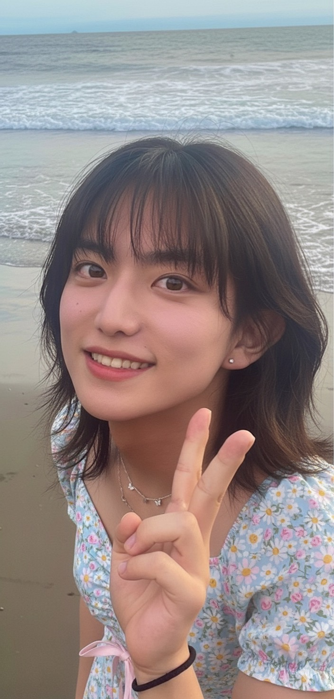

🎉 Happy Birthday! 🎉
🎂✨🎁✨🎂

高橋さん、誕生日おめでとうございます！！㊗️㊗️
多くの人は固定概念に囚われ、自分の不出来を環境や周りのせいにしがちですが、高橋さんの素晴らしいところは、物事を本質まで細分化して思考できること、不必要なものを省いて最も効率よく進んでいけることだと感じます。常識にとらわれることなく、遊びもビジネスも桁違いで、その姿は眩しくいつも映ります。「矮小」という言葉の真逆に位置する存在だと感じていますw
自分のやりたいことだけを突き詰めて結果を出して資本主義の世界に君臨している生き様は、かっこいいです。派手に遊んで、そして結果も出していく、、いいです。
たかはしさんの素敵ポイントに他人を下げない、否定しない。いろんな人を肯定し、実績などで見下したりせず対等に考えているところです。高橋さんほど心に余裕がある人は珍しいと思います。
最初に出会って渋谷のあの薄暗いレストランでご飯を食べた日、私の価値観は大きく変わりました。凝り固まっていた価値観を破壊してもらいました。全力で遊んでもいいんだと教えてもらった、いや、正確には、世間体を気にせずやりたいことを素直にかましていって、努力も怠らずに結果も出して黙らせていく、そういう姿です
いつも仲良くしてもらえていることが本当にありがたく思っています。尊敬している高橋さんでなければ、わざわざ猫の餌やりのために留守番などしません。
プールに行った後にまた発見、また尊敬できるところが増えました。人に対して否定的になることがないだけでなく、いつでも、どんな時も前向きなところです。訴訟された時もためになると言って自分で手続きを進めたり、どんな時も楽しんでいる姿を見て、改めて評価が上がりました。プールでも心の底から楽しんでいて、少し悲観的になりがちな僕にとっては、真似したい部分です。
多くの人は実績で人を見がちで、高橋さんの稼いでいる額で尊敬している人もいるかもしれません。しかし私は、生き様にとても影響を受けており、そこがお気にです。
友達として、先輩として、経営者として、心から尊敬しています。いつまでも見上げているつもりはありません。私も強くなっていくので、見ていてください。もし高橋さんの会社が危うくなったら、私の会社の社員になってもらいます！
これからも楽しく遊んで、いろんな仕事で絡んでいきたいです！
素敵な一年になりますように。